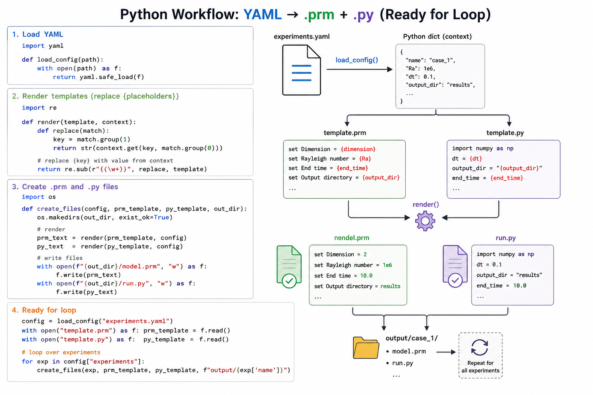

run_ASPECT.py
Run Automation Script (run_ASPECT.py)
Overview
The run_ASPECT.py script is the core execution engine of the ASPECT–Landlab
coupling framework. It automates the entire workflow from reading experiment
configurations to generating input files and executing simulations.
The script is designed to:
Parse experiment definitions from a YAML configuration file
Generate ASPECT (
.prm) and Landlab (.py) input files using templatesCreate structured output directories for each simulation
Execute ASPECT in parallel using MPI
Log outputs for reproducibility and debugging
This approach enables scalable and reproducible multi-run simulations.
Directory Structure
The script assumes the following project structure:
project_root/
├── config/
│ └── experiments.yaml
├── templates/
│ ├── template.prm
│ └── import-template.py
├── outputs/
└── run_ASPECT.py

Key Components
Path Configuration
The script dynamically determines paths relative to its own location:
BASE_DIR: Root directory of the projectCONFIG_PATH: YAML configuration fileTEMPLATE_PRM_PATH: ASPECT template fileTEMPLATE_PY_PATH: Landlab template scriptOUTPUT_BASE: Directory where simulation outputs are stored
This ensures portability and avoids hardcoded paths.

Configuration Loader, Loop and Final Output
All experiment settings are defined in a YAML file, which
Python reads and processes to automatically generate input
files (.prm and .py), create run directories, and
execute simulations. This eliminates manual editing, enables
efficient parameter sweeps, and ensures reproducible, scalable
workflows.
{kind=link}

def load_config(path):
This function:
Validates the existence of the YAML file
Loads the configuration using
yaml.safe_loadReturns a Python dictionary representation
It provides a clean abstraction for reading experiment definitions.
Template Rendering System
The script uses a lightweight placeholder replacement mechanism.
Sanitization
def sanitize(value):
Converts values to strings
Replaces spaces and special characters
Ensures safe file and directory naming
Safe Rendering
def safe_render(template_text, context):
Replaces placeholders of the form
{key}Uses values from a combined context dictionary
Leaves unknown placeholders unchanged
This avoids runtime failures due to missing keys and allows flexible templates.
Main Execution Workflow
The run_all() function orchestrates the complete workflow:
1. Load Configuration
Reads
experiments.yamlExtracts:
runs: Individual simulation casesconstants: Global parametersaspect: Execution settings (MPI, executable)
2. Read Templates
Loads:
template.prm(ASPECT input)import-template.py(Landlab coupling script)
3. Prepare Execution Parameters
MPI command (
mpi_run)Number of processes (
nproc)ASPECT executable path
4. Loop Over Simulation Runs
For each entry in runs:
Validate
run_idCreate a dedicated output directory:
outputs/<run_id>/
Merge parameters:
context = {**constants, **run}
Render templates into:
case.prmimport.py
5. Environment Setup
The script modifies the runtime environment:
env["PYTHONPATH"] = ASPECT_PYTHON_SCRIPTS + ...
This ensures that ASPECT can access required Python modules for coupling.
6. Simulation Execution
Each simulation is executed using subprocess.run:
mpirun -np <nproc> aspect case.prm
Key features:
Runs inside the respective output directory
Redirects stdout and stderr to
log.txtUses
check=Trueto detect failures
7. Logging and Error Handling
Output logs are saved per run:
outputs/<run_id>/log.txt
Failed runs are:
Reported to the console
Skipped without stopping the entire workflow
This ensures robustness for batch simulations.
Design Highlights
1. Automation
Eliminates manual editing of
.prmand.pyfilesSupports large parameter sweeps
2. Reproducibility
Each run is isolated in its own directory
Logs and inputs are preserved
3. Flexibility
Easily extendable via YAML configuration
Template-driven system supports new parameters without code changes
4. Fault Tolerance
Individual run failures do not interrupt the full batch
Integration in Coupling Workflow
The script acts as the bridge between configuration and execution:
experiments.yaml
↓
run_ASPECT.py
↓
template.prm + template.py
↓
case.prm + import.py (per run)
↓
ASPECT execution (MPI)
↓
Landlab coupling via Python
↓
Outputs
Final Remarks
The run_ASPECT.py script provides a scalable and modular solution for
running coupled geodynamic–surface process simulations. By combining YAML-based
configuration, template-driven file generation, and automated execution, it
enables efficient exploration of complex parameter spaces with minimal user effort.